The course resource comes from Coursera. Here’s the website
Part-1
ML Components
- Experience E - The process that the machine can learn from.
- Task T - The goal to achieve
- Performance P - The the result of the work machine did.
ML Algorithms
- Supervised - We are going to teach machine how to do sth.
- Unsupervised - The machine learn itself.
Other
- Recommender systems.
- Reinforcement learning.
Classical Supervised ML Problems
In supervised learning, we are given a data set and already know what our correct output should look like, having the idea that there is a relationship between the input and the output.
- Regression Problem:Draw the nearest line to the data set.continuous.Predict the result.
- Classification problem:discrete,give the probability of each class.Make classifications.
Classical Unsupervised ML Peoblems
Number of types is uncertain. no idea what our results should look like
- Clustering : Automactically make clusters or categories.
- Non-Clusterng : Extracting different audio sources from one mixed sound.etc.
Part-2
Model Representation
Training set:The prepared data set you’d like to train the program with.
Hypothesis function:Map the corresponding data colum.
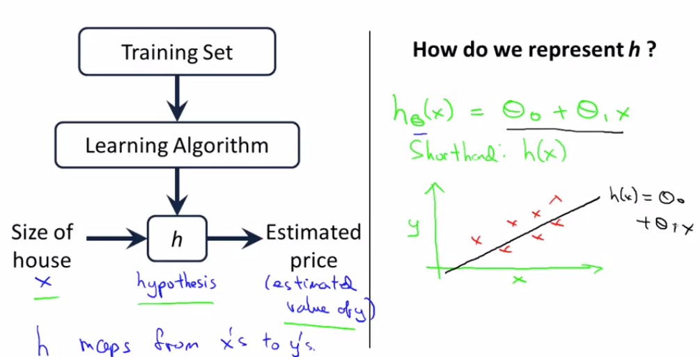
Linear Hypothesis Function
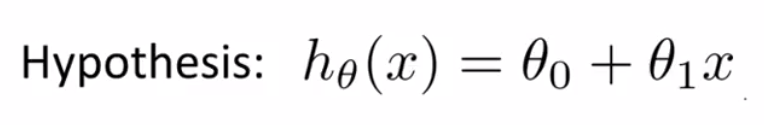
Cost Function
We can measure the accuracy of our hypothesis function by using a cost function. This takes an average difference (actually a fancier version of an average) of all the results of the hypothesis with inputs from x’s and the actual output y’s.
This function is otherwise called the “Squared error function”, or “Mean squared error”.
The cost function for linear hypothesis function
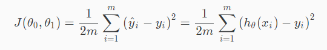
Intuition 1
For different theta1 we get different value of the Cost Funtion
Goal : Try to find the minimum point of cost funtion.
Inuition 2
Dealing with multiple parameters
Contour plot/figure
Gradient descent
Outline
- Start with some theta0 & theta1
- Change the params until we reached the minimum point.

Caution: It may reach different point when choosing different initial point.Also, it may not reach the minimum point if the cost funtion has a stationary point.
Algorithm
- Take a init param point.
- Repeatly descent in the direction where descents the fastest.(Multiply with some learning rate const alpha which is a positive num)
Use the particial derivative of each component
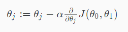
Intuition
About learning rate:alpha
- About the value of learning rate.
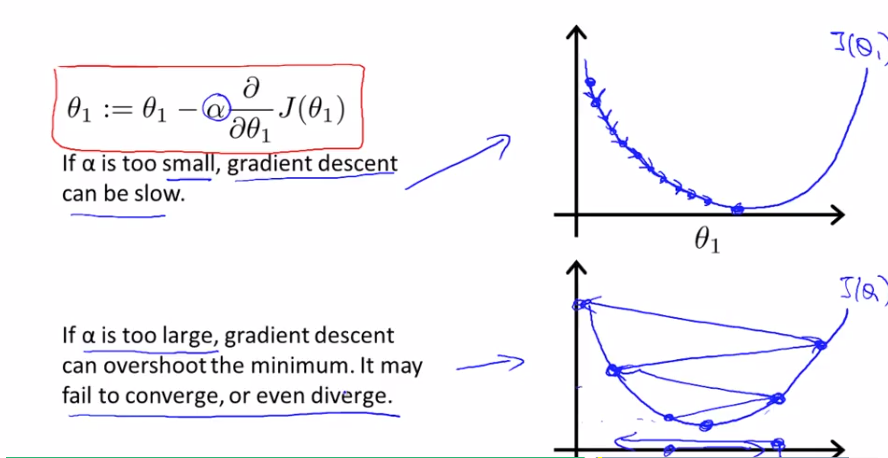 - About the property of learning rate applying on learning.
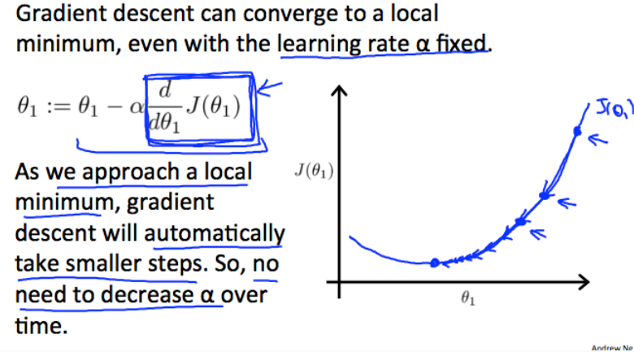
Linear regression with one variable
The cost funtion of linear regression is always a convex funtion(bowl shaped)
- Batch gradient descent
Regular expression for this kind of cost funtion.
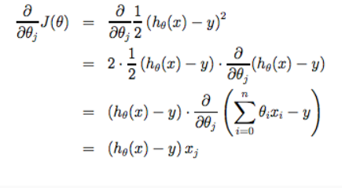
Part-3
Multiple Features
New hypothesis function with multiple parameters(theta_n)
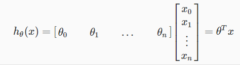
We use Matrix to represent multiple params.
Gradient Descent for Multiple Features
Each of the parameter has to be calculated individually.
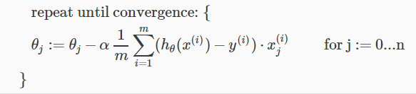
Trick 1 Feature Scaling
Fit your training dataset into the scale between about -1..1
Which means normalizing them.
Scaling formula:
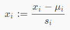
Trick 2 Learning Rate
How to judge if it converges: step <= a small number–(? waht if stationary point)–
Too large:May cause overshooting,may not converge
Too small: Slow convergence.
Polynomial Regression
- Quadratic funtion
- Cubic funtion
- Squaroot funtion
- etc…
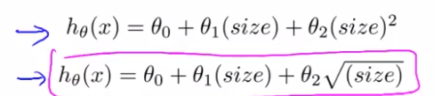
Treat the non-linear elements in the function as newly added features!
Most important : Choose your model.Analyse how the model will develope.
Tip: Pay attention to the transformation of the data when scaling the features.
Normal equation(Already studied in “Error theory and data processing”)
A manual analytical method to find the global minimum of linear regression.
Normal formula
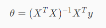
Where X Matrix is the combination of original feature dataset.X^T X is a n matrix where n is the number of features.
Where y Matrix is the Vector of the result of dataset.
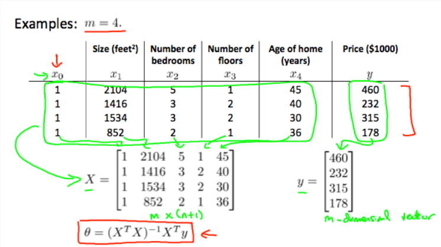
There is no need to do feature scaling with the normal equation.
Comparision
| Gradient Descent | Normal Equation |
|---|---|
| Need to choose alpha | No need to choose alpha |
| Needs many iterations | No need to iterate |
| O (kn^2) | O (n^3), need to calculate inverse of X^T X |
| Works well when n is large | Slow if n is very large |
Noninvetibility
What if X^T X is non-invertible matrix.
Normal invet funtion: inv
Pseudo-invert function: pinv
Reasons:
- Features are linearly dependent.
- Too many feature but there are few dataset.
For too many features:
- Delete some feature.
- Use regularization.